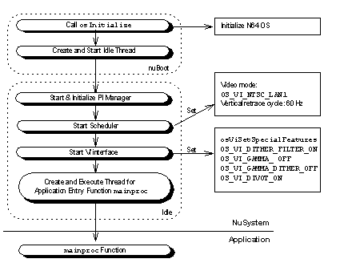

The initiator initializes the N64 OS and NuSystem with a series of processes that are executed from the time of the nuBoot function up to the application's mainproc function.
The flow of the NuSystem initiator is diagrammed in Figure 2.1. By the time the mainproc (application program) executes, the video interface (VI) and peripheral interface (PI) are usable and the Scheduler has been started.

Figure 2.1 Initiator Process Flow
In addition to these functions, the initiator can also register a callback function in the idle loop in the idle thread. This callback function is executed only when there is no executable thread. Its priority is OS_PRIORITY_IDLE, which is the lowest priority state. The callback is registered in the idle loop by the nuIdleFuncSet function.

Customizing the initiator involves setting the video mode and the retrace cycle (arguments used at Scheduler start-up time) and changing the video interface (VI) feature settings. The video mode setting and the VI feature settings can be changed with the application, but the retrace cycle cannot. If you want to change the retrace cycle, you need to change the nuScCreateScheduler function's call argument in the nuboot.c source code file.(The retrace count here is the cycle for retrace events transmitted by the VI. In the case of NTSC, the message transmission cycle=60Hz/retrace count).

This section describes the methods for changing the memory map as it relates to the Initiator.
Use the following methods to alter various regions if the memory map from the default setting shown in Section 1.5, Figure 1.4.
For example, the default maps the Z-Buffer between the system region and the code region. To change the location with each other, first you must rewrite the spec file and move the location of the code region. The default setting of the code region is specified in the spec file as follows:
beginseg name "code" flags BOOT OBJECT entry nuBoot address NU_SPEC_BOOT_ADDR stack NU_SPEC_BOOT_STACK .... (omitted) .... endseg
With this segment setting, the NU_SPEC_BOOT_ADDR address entry is defined as 0x80025c00 in the nusys.h header file. If you want to move the code region to the front, specify the address entry as 0x80000400 .
beginseg name "code" flags BOOT OBJECT entry nuBoot address 0x80000400 stack NU_SPEC_BOOT_STACK .... (omitted) .... endseg
Then, change the Z-Buffer to a suitable location to be appropriately positioned after the code region by using the nuGfxSetZBuffer function when the application is initialized.
nuGfxSetZBuffer((u16*)_codeSegmentEnd);
With these changes, the locations of the code region and the Z-buffer region can be exchanged.